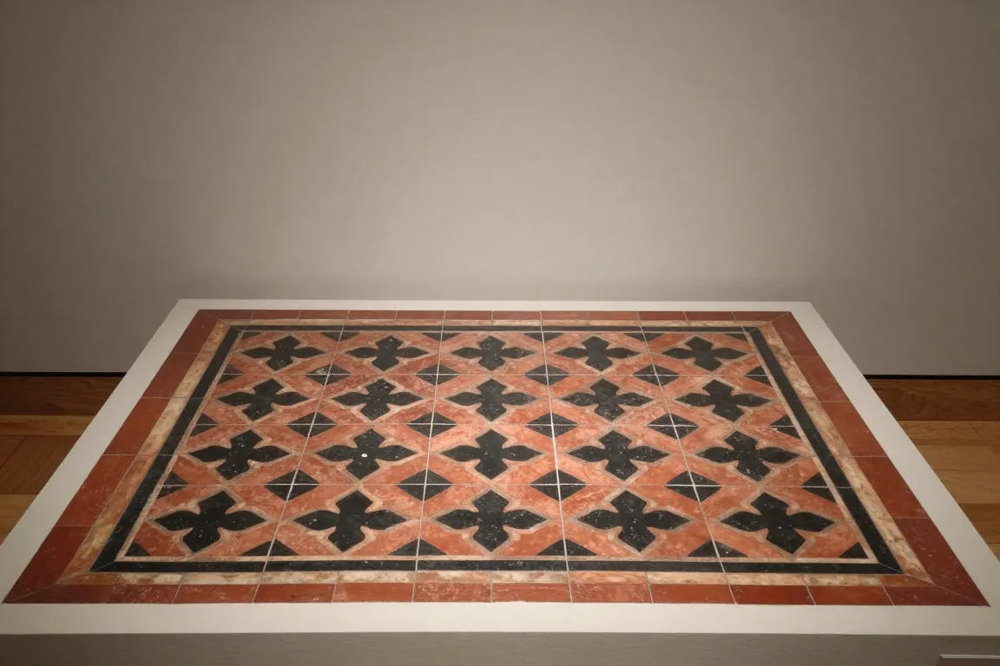

Hard floor tiles with a pattern of clay in a second colour set into the face. Factories pressed them from dust and sold them to churches, halls and houses. The pattern is flat, geometric and mostly red, buff, black and blue.

Core thesis
A pattern that is part of the clay, and not a layer on it, does not wear off under a million feet.
Design principles
Press a recess of 2 to 3 mm in the red body and fill it with a clay of a second colour, so that the pattern goes through the face.
Limit the palette to 4 or 5 earth colours: red, buff, black, blue-grey and a cream.
Build the floor from tiles of 4 to 6 inches, and join 4 to 16 tiles into one repeat.
Draw the pattern from medieval sources: the lily, the quatrefoil, the heraldic beast and the interlace.
Surround the main field with a border of narrow tiles, and set a plain tile at the edge.
Fire the tile hard with a thin clear lead glaze, or leave the face matt and unglazed on the floor.
Add relief and majolica glaze on wall tiles, where nobody walks, to give bright blues and greens.
Make each tile the same size to 0.5 mm, so that the joints stay tight and the pattern runs on.
Anti-patterns
A painted pattern that sits on top of the face and wears off
A loose pastel palette without a dark outline
A curved Art Nouveau line in a medieval pattern
A single large picture across many tiles
A thick, wavy glaze that hides the edges of the inlay